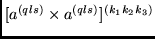
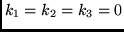
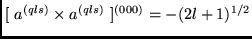
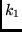
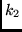
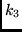

Next: The subroutine W1
Up: SAI_SQLS1
Previous: The subroutine SLS
The routine determines the value of the reduced matrix element:
The routine uses the tables of reduced matrix elements of the tensor
operator

for s-, p - and d - subshells (see Špakauskas et al [13]),
and for the f - shell the expression (34) from paper P1 [3] is used.
The subroutine does not calculate the simple case
of
,
because then the operator is just

(expression (15.54) in Rudzikas [14]).
The subroutine has the formal arguments:
- K1 is the rank .
- K2 is the rank .
- K3 is the rank .
- L is the orbital quantum number l.
- J1 is the state number of the bra function (see Tables 1, 2).
- J2 is the state number of the ket function.
- W is the value of the reduced matrix element
(35) which is returned by
the subroutine.
2001-12-07